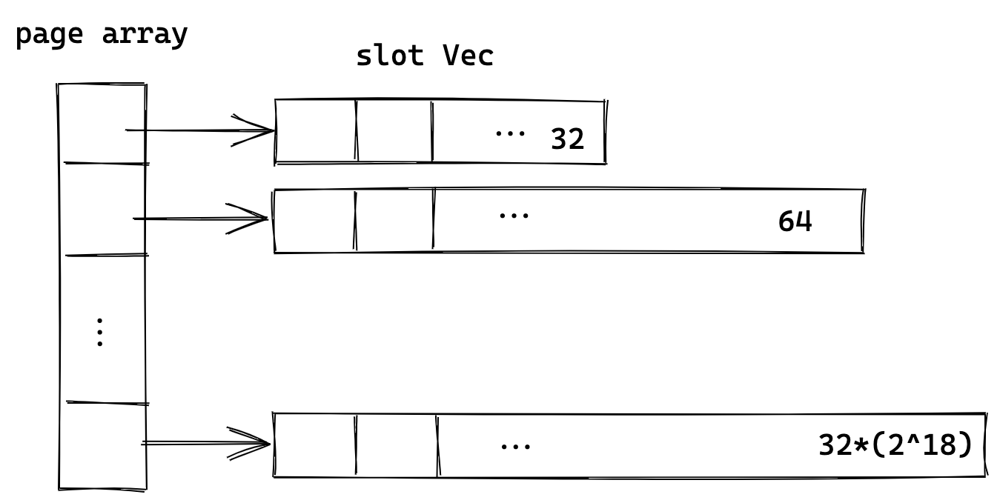
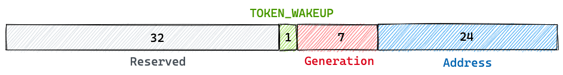
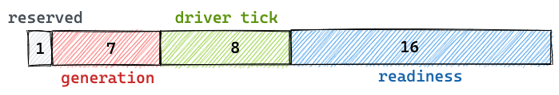

Slab, mio token 和 readiness
Slab
Slab 是 util 中的一个模块，名字和 Linux kernel 中的 Slab 一样，作用也确实差不多，可以用来为 object 分配内存。Slab 是一个泛型 struct，包含一个 Page 数组，每一个 page 包含一个 Vec
 link
Slab 分配内存后，会返回一个地址和新分配 object 的引用。之后可以通过这个地址来获取之前分配的 object。
#![allow(unused)] fn main() { impl<T: Entry> Allocator<T> { pub(crate) fn allocate(&self) -> Option<(Address, Ref<T>)> { } } impl<T> Slab<T> { pub(crate) fn get(&mut self, addr: Address) -> Option<&T> { } } }
mio token 设计
mio 是通过 token 来注册 event poll 的，比如在 epoll 中就是 epoll_data_t 中的 uint64_t，然后 kernel 返回给我们的事件就会带着之前传过去的 token。代码可以根据这个 token 来找到要通知的数据，这个 token 理论上可以随便传。Tokio 这里是定义了一个 32 bits 的数据（以 64 位为例）：
 link
（从左开始）前 32 位在 64 位系统中没有用，第 33 位是给 TOKEN_WAKEUP 这个特殊的 token 使用的，也就是 1<<31。而其他一般的 token 只包含 generation 和 address，也就是只占后 31 位，这样就不会和 TOKEN_WAKEUP 冲突。
address 表示的是 Slab 中整体的 Slot index，等于之前所有 page slot 之和加上在当前 Page 中的 index。比如第一个 page 的第一个 slot 就是 0，第二个 page 的第一个 slot 就是 32（因为第一个 page 有 32 个 slot），而第三个 page 的第一个 slot 是 96 ，以此类推，最后一个 page 的最后一个 slot 是 2^24-1（24 个 1），刚好是 24 位，和 address 的位数一致。这里可以看到 address 的位数、Slab page 个数和第一个 page 的 slot 数是有关系的，改变其中一个，比如增加一个 page，24 位的 address 就不够了。
generation 是用来防止一个过期的 event 被新的 fd 所处理。因为一个 address 只是一个 index，当一个 ScheduledIO 被 drop 时，之前的 address 就可以被新的 ScheduledIO 所使用，但这时可能还会收到老的 events。如果没有 generation 的话，我们通过这个老的 token 可以找到一个 ScheduledIO，并设置它的 ready，这就有问题了。而现在，因为这个 token 里的 generation 和ScheduledIO 中的 generation 不同，这个 event 就会被忽略，于是通过这样的方式来避免了 race condition，正如 2.4 中的代码：
#![allow(unused)] fn main() { if let Some(token) = token { if GENERATION.unpack(token) != current_generation { return Err(()); } } }
readiness 设计
ScheduledIO 里的 [readiness](https://github.com/tokio-rs/tokio/blob/a5ee2f0d3d78daa01e2c6c12d22b82474dc5c32a/tokio/src/io/driver/scheduled_io.rs#L26)是一个 AtomicUsize 类型的数据，和 mio token 类似，为了兼容 32 位，只用了 32 位，如下：
 link
最高 1 bit 是保留字段，暂时没有用。之后七位是熟悉的 generation，这个是和 mio token 的 generation 一样的，因此7位就够了。
#![allow(unused)] fn main() { // shared: ScheduledIO let token = GENERATION.pack(shared.generation(), ...); }
从上边这段 token 生成的代码可以看到，token 中的 generation 就是 ScheduledIO 的 generation。
最后 16 位的 readiness表示这个 ScheduledIO 是否 ready，可能有多种状态，现在有四种可读、可写、读关闭和写关闭，目前只用了4 bits，但之后可能会用更多。注意这整个 32 位的数据，整体作为 ScheduledIO 的 readiness 字段，而其中后 16 位也叫 readiness。
driver tick 是 IO driver 的一个计数器，每次 driver poll 时就会加1，可以用来判断什么时候回收 Slab 中的 page。Slab 的 page 使用时才会为 Vec 申请内存，但当使用完了之后为了节省空间需要回收（compact），但如果每次都去检查是否要回收就比较慢，所以用了一个这样的计数器，当 poll 了 COMPACT_INTERVAL(255) 次才会运行 compact。在 2.4 章 driver.park() 中：
#![allow(unused)] fn main() { self.tick = self.tick.wrapping_add(1); if self.tick == COMPACT_INTERVAL { self.resources.as_mut().unwrap().compact() } }
而 readiness 里也会存一份 tick（中间的8位），是为了分辨 event 是由哪次 poll 产生的，和 generation 有点类似，也是为了避免 race condition。一般有 reactor 线程和另外一个线程同时运行，reactor 线程负责监听事件并 set readiness，另一线程在 fd ready 后执行 read()。如下边这段代码，如果 read 结果是 WouldBlock(b)，表示这个 fd 暂时不可读了，需要 clear readiness(c)。但如果在 clear 之前，刚好有新的 event 到了并且 reactor 线程 set readiness，然后 clear 才执行，当这个线程又在 loop 中等待事件时，因为新的事件已经被 clear 了，对方也很可能不再发数据过来，就发生了死锁。
#![allow(unused)] fn main() { async fn read(&self, buf: &mut [u8]) -> io::Result<usize> { loop { let event = self.readiness(interest).await?; // a match self.mio_socket.read(buf) { Ok(v) => return Ok(v), Err(ref e) if e.kind() == WouldBlock => { // b self.clear_readiness(event); // c } Err(e) => return Err(e), } } } }
而有了 tick 的机制后，a 返回的 event 会带上产生它的 tick，当这个 readiness 被 clear 的时候，会检查 event 中的 tick 和 ScheduledIO 中 readiness 的 tick 是否相同，如果不相同就不会清除，以下是 set_readiness(clear_readiness 调用了 set_readiness) 的一部分：
#![allow(unused)] fn main() { let packed = match tick { // tick is event.tick in clear_readiness Tick::Clear(t) => { // current is ScheduledIO.readiness if TICK.unpack(current) as u8 != t { // Trying to clear readiness with an old event! return Err(()); } TICK.pack(t as usize, new.as_usize()) } }; }